RAFT
写在前面
RAFT是比PAXOS更容易理解的一致性算法，即使容易理解，依然细节很多。建议有英语基础的初学者还是要看论文。本篇文章主要列举RAFT中的异常场景，对比论文看可以达到更好的学习效果。
选举
选举阶段，主要解决两个问题：
- 每个节点都把票投给了自己。
- leader宕机。
每个节点都把选票投给自己
解决方案是随机的election timeout。election timeout用来控制一个follower合适变成candidate。假定三个节点的情况：
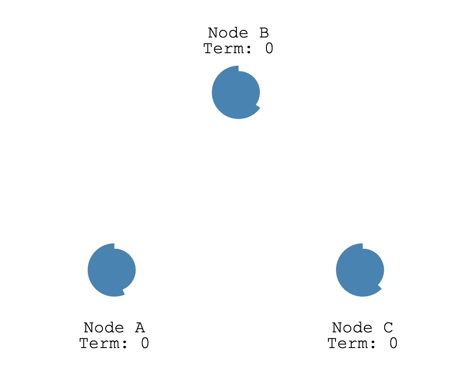
由于随机election timeout是随机值，假定A先成为candidate：
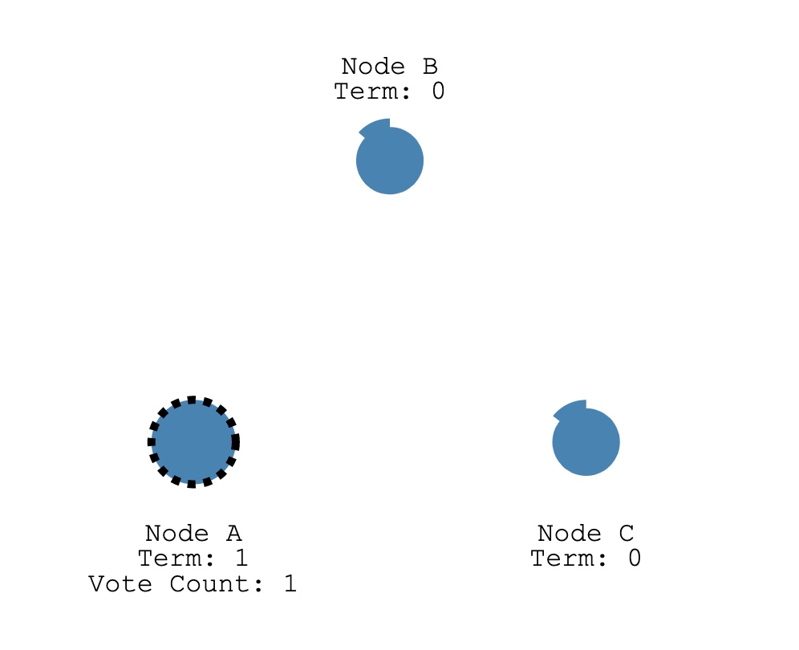
此时A开始发起term 1的投票，此时A成为leader：
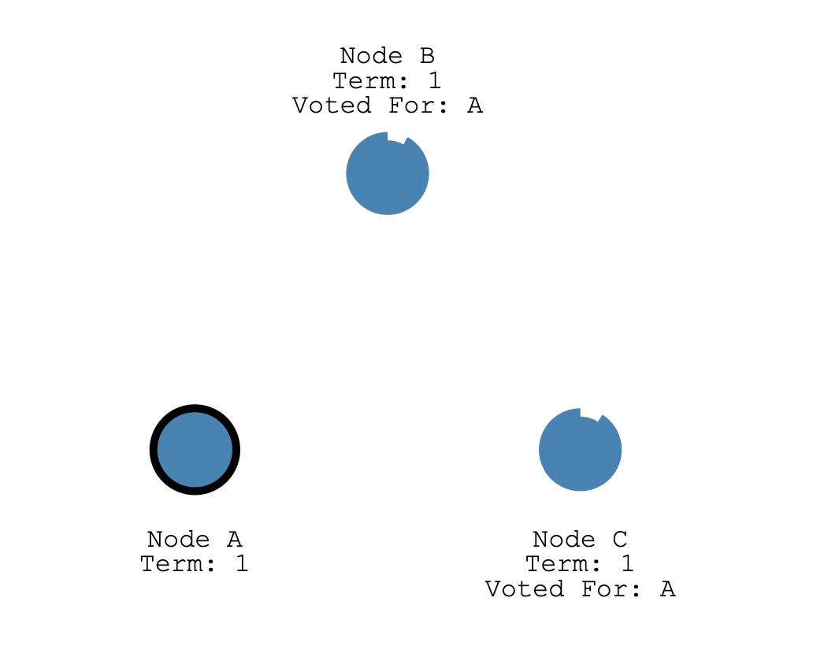
平分投票的情况，此时节点C和D同时成为candidate并发起投票：
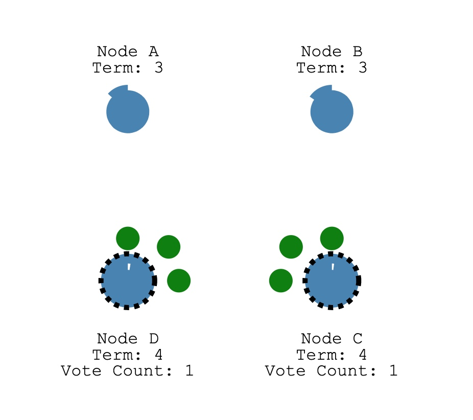
此时A和B分别投票给D和C。
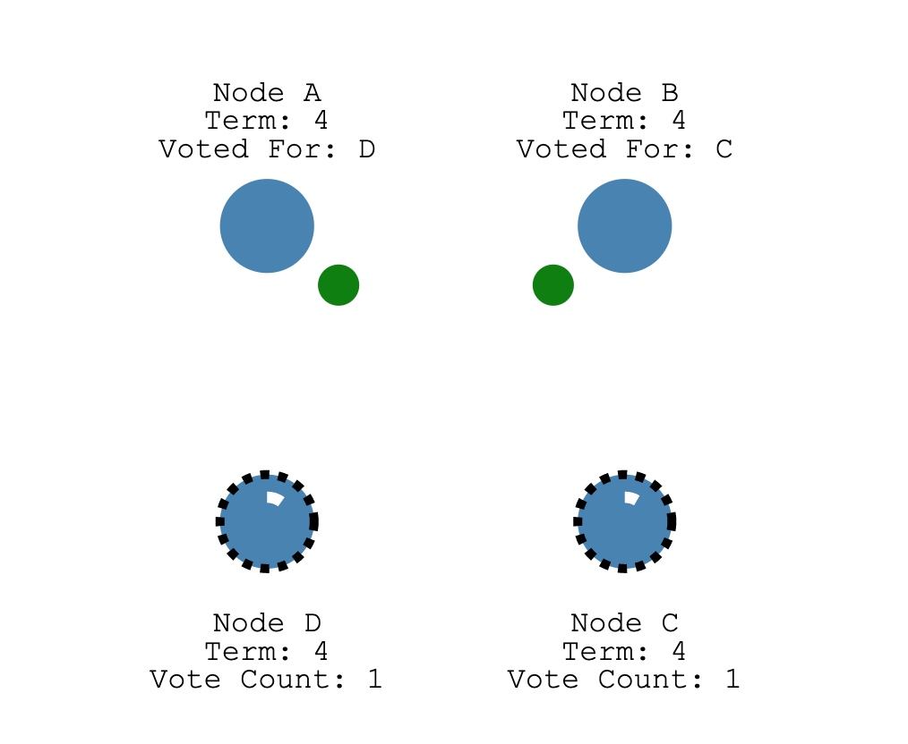
产生了平分选票的情况。即此term没有leader产生，此时candidtate会等待下一个election timeout周期，然后开始继续投票。
注意，当follower收到选票后或者leader的append log消息时，需要重置自己的election timeout。这个机制让我们可以更快的选出一个leader。
leader宕机
leader宕机时，由于没有append log消息来重置follower的election timeout，所以follower会成为candidate，并且开始新一轮选举。具体过程与第一个问题一致，不多赘述。
日志复制
这个过程会存在多种异常情况：
- follower存在leader不存在的日志。
- follower缺失了leader的日志。
- 提交之前任期内的日志条目。
- 脑裂，出现多主问题。
下文我们以[index, term]的方式表示一条log。
具体的follower接受到append log的逻辑如下，详细的可以看论文：
- 如果
term < currentTerm就返回false。 - 如果日志在
prevLogIndex位置处的日志条目的任期号和prevLogTerm不匹配，则返回false。 - 如果已经存在的日志条目和新的产生冲突（索引值相同但是任期号不同），删除这一条和之后所有的附加日志中尚未存在的任何新条目。
- 如果
leaderCommit > commitIndex，令commitIndex等于leaderCommit和新日志条目索引值中较小的一个。
follower存在leader不存在的日志
此时集群的状态如下：
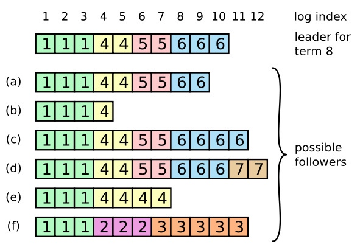
此时leader的最新一条为[10, 6]。我们挑选follower e和follower f看看RAFT如何处理这种情况。
对于follower e，log [6, 4]和[7, 4]与leader的日志不匹配。
对于follower f，log [4, 2]之后的日志全都不匹配。
RAFT会记录每个follower的位点，这个位点用来记录需要发送给他的下一个日志条目的索引值，初始化为leader的最后索引值+1，这个例子中，leader最新的位点为10，则follower的复制位点被初始化为11。
follower e：
RAFT开始向follower e发送消息，RAFT复制方式是从后向前复制，此时复制[10, 6]（以每次复制一条看更容易理解）给follower e，由于follower在index=10位置不存在消息，返回false。此时leader会继续向前尝试，知道找到匹配的日志。当leader尝试将[7, 5]发送给follower e的时候，e会发现index=7位置的term与leader不符合，此时删除index=7和之后所有的日志。
按照这个规则，follower e会删除[6, 4]和[7, 4]两条日志，当leader继续发送[5, 4]的时候，follower e返回true。此时leader记录follower e的复制位点为index=6，后续将[6, 5]和之后的log一条条复制给e。
了解了follower e的思路之后，可以对照论文的规则即可推断出follower f的复制逻辑。
follower缺失了leader的日志
选取follower b，follower b此时缺失了[5, 4]和之后所有的日志。此时leader会按照上述的逻辑找到index=5，并尝试把之后所有的日志复制给follower b。
提交之前任期内的日志条目
RAFT规定，不能删除已经提交到状态机的条目，但是按照我们之前的逻辑不能规避这个问题，所以RAFT规定，leader只能提交当前任期内的log到状态机。具体看看：
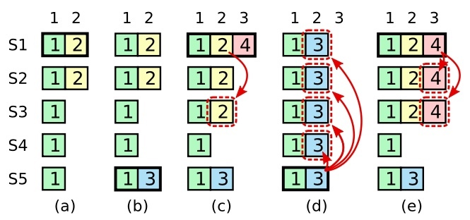
- 图(a)中，S1是leader，部分的复制了index=2的日志条目，此时
[2, 2]未被commit。 - 图(b)中，S1宕机，然后S5在任期3里通过S3、S4和自己的选票赢得选举，然后从客户端接收了一条不一样的日志条目放在了索引2处。
- 图(c)中，S5又崩溃了，S1重新启动，选举成功，开始复制日志。在这时，来自任期2的那条日志已经被复制到了集群中的大多数机器上。按照之前的规则，2已经被leader commit（满足大多数）。
- 图(d)中，S1又宕机了，此时S5可以成为leader，因为S5满足成为主的条件，term=3 > 2，且最新的日志index=2，比大多数节点（如S2/S3/S4）的日志都新。此时，按照复制规则，S5会把自己的
[2, 3]覆盖到其他机器，并且删除已经commit的[2, 2]这条log。这是致命的错误。
解决方式就是我们说过的，leader只能提交任期内的日志条目。
继续以上述的场景为例，假定此时整个集群的状态进行到图(c)。由于我们规定leader只能提交任期内的日志条目，此时term=4，所以即使[2, 2]已经被复制到大多数的follower上，但是当前term=4，所以leader不能提交index=2的这条log，此时commitIndex仍然等于1。
此时存在两个情况，第一种就是S1挂掉，第二种就是S1并没有挂掉。
- S1并没有挂掉，则S1会继续给其他follower复制log，当走到图(e)时，
[3, 4]这条日志被大多数收到，且term=4符合leader只能提交任期内的日志条目这个要求，此时commitIndex=3，提交index=3的这条log到状态机。那么如果提交完了S1挂了呢？此时S5不会成为主，由于S5最多只能收到S4和自己的投票，不满足大多数。新的leader只会在S2和S3中产生。 - S1挂掉，假定S5成为leader，此时假定S5一直存活，那么整个集群的状态会继续来到图(d)，注意！由于此时
[2, 2]未被交道状态机，所以即使S5的[2, 3]这条log覆盖到S1、S2和S3的[2, 2]，也不会产生任何问题，因为[2, 2]的log未被提交。
考虑更极端的情况，假定整个集群状态在在图(e)，S1刚刚提交了[3, 4]（当然[2, 2]也被一起提交了），但是还没来得及通知S2和S3提交[3, 4]就挂了，此时仍然不会导致删除已经提交的log。因为即使S1挂了，S5和S4也不会成为主，由于S2和S3的日志都比他们新，新的leader只会出现在S2和S3中。
脑裂，出现多主问题
RAFT保证即使出现了网络隔离，依然能够保证数据强一致性。
假定此时集群状态如下：
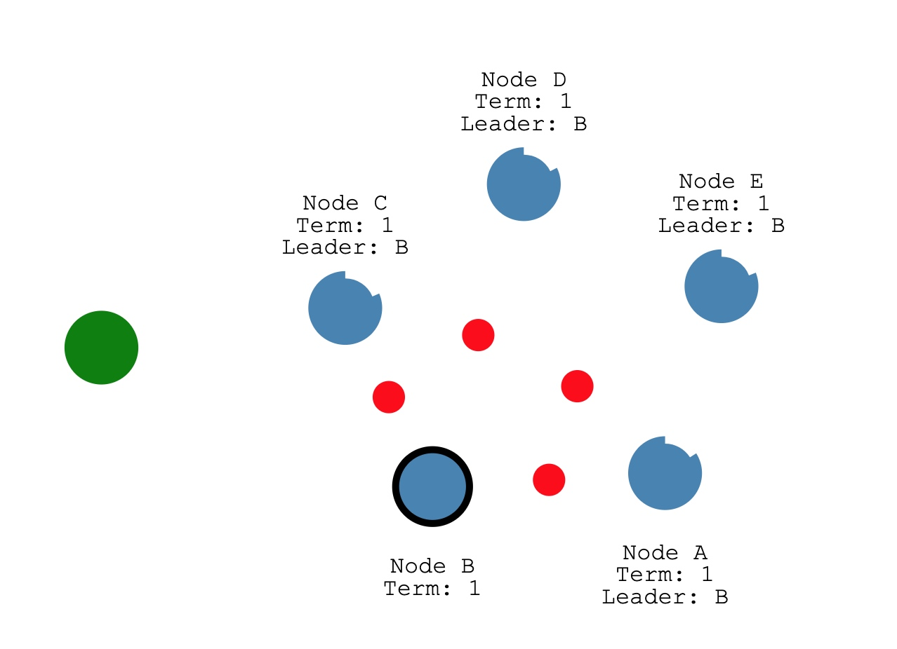
此时节点B和A被隔离，B仍然是主：
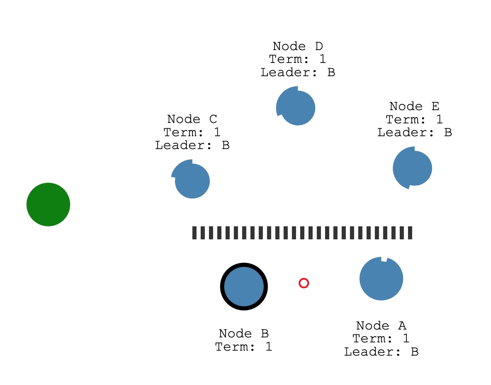
C、D和E由于超时没有收到leader的心跳，重新选主，此时假定C成为主，term+1后为2（这里仍然保证了每个term只有1个leader）：
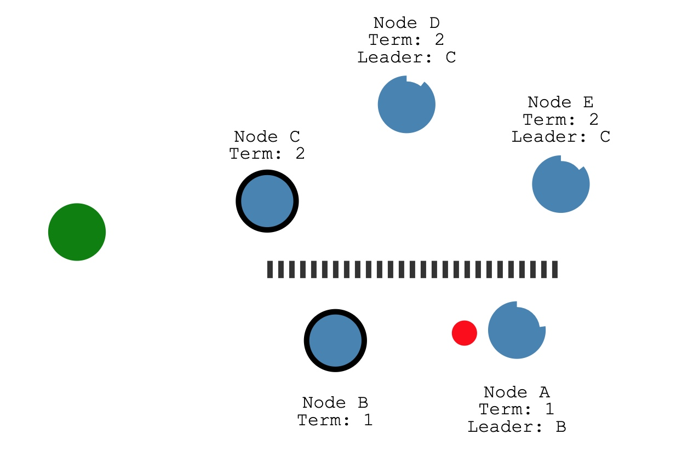
client分别发送SET 8和SET 3到两个leader上。由于B和A独立的分区不满足大多数，所以不能提交。而SET 8落到了上半区中，此时上半区满足大多数，可以提交：
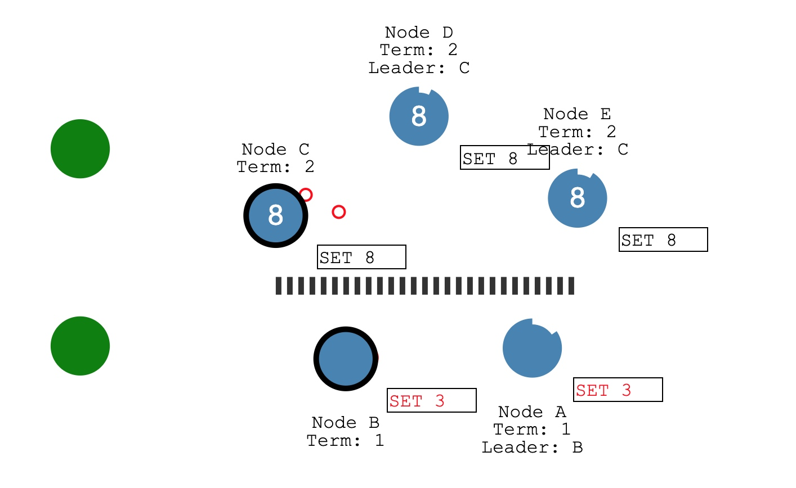
后续当A和B的隔离被解除时，C的term=2高于B和A的1，此时B和A直接退化成follower，并且会把SET 8复制到自己的日志中，保证整个集群的状态一致。
集群拓扑变化
我们用CO表示旧集群配置，新集群配置用CN表示。CO和CN共存我们用CO并CN表示。具体集群变更流程如下：
- 当集群成员配置改变时，leader收到重配置命令从CO切成CN。
- leader在本地生成一条新的log，其内容是CO并CN，代表当前时刻新旧拓扑配置共存，写入本地日志，同时将该log推送至其他follower。
- follower收到log后更新本地日志，并且此时就以该配置作为自己了解的全局拓扑结构。
- 多数follower确认了C0并CN这条日志的时候，leader就commit这条log。
- 接下来leader生成一条新的log，其内容是全新的配置CN，同样将该log写入本地，同时推送到follower。
- follower收到新的配置CN后，将其写入日志，并且从此刻起，就以新的配置作为系统拓扑，并且如果发现自己不在Cnew这个配置中会自动退出。
- leader收到多数follower的确认消息以后，向客户端发起命令执行成功的消息。
异常分析：
- 如果leader的CO并CN尚未推送到follower，leader就挂了，此时选出的新的leader并不包含这条日志，此时新的leader依然使用CO作为全局拓扑配置。
- 如果leader的CO并CN推送到大部分的follower后就挂了，此时选出的新的leader可能是CO也可能是CN中的某个follower。
- 如果leader在推送CN配置的过程中挂了，那么和2一样，新选出来的leader可能是CO也可能是CN中的某一个，那么此时客户端继续执行一次改变配置的命令即可。
- 如果大多数的follower确认了CN这个消息后，那么接下来即使leader挂了，新选出来的leader也肯定是位于CN这个配置中的。
另外，为什么不能直接从CO切换成CN呢？因为可能产生多主。
解决方案RAFT论文中也提到了，有两种，比较推荐第一种：
- 每次只允许增加或移除一个节点。
- join consensus。（两阶段提交）
除了成员变更的实现，成员变更还带来一系列问题：
- 新节点如何追赶。
- 删除的节点是当前leader。
- 为什么要有PRE-VOTE。
- 被移除的节点破坏当前集群的选举。
多主
假设拓扑关系如下，S1为leader：
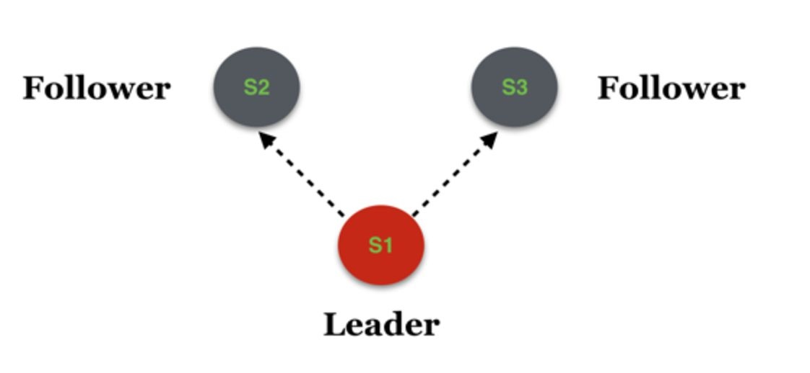
此时变更了系统配置，将集群范围扩大为5个，新增了S4和S5两个节点，这个消息被分别推送至S1、S2和S3，但是假如只有S3收到了消息并处理，S1和S2尚未得到该消息：
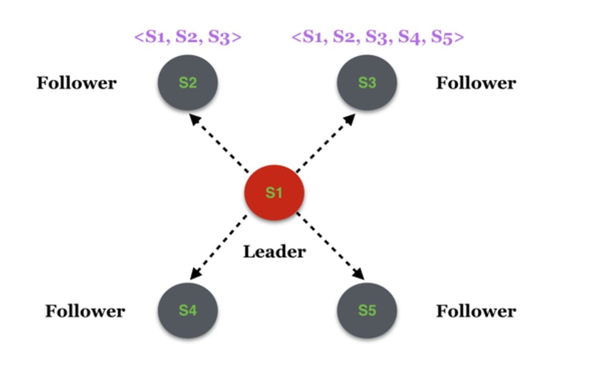
这时在S1和S2的眼里，拓扑依然是[S1, S2, S3]，而在S3的眼里拓扑则变成了[S1, S2, S3, S4, S5]。假如此时由于某种原因触发了一次新的选主，S2和S3分别发起选主的请求：
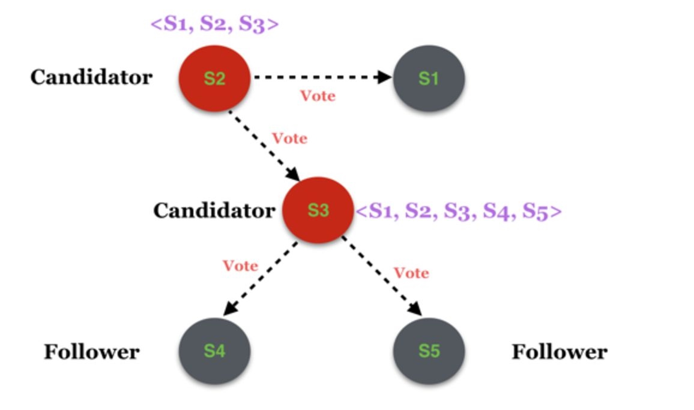
最终，候选者S2获得了S1和S2自己的投票，那么在它眼里，它就变成了leader。而S3获得了S4、S5和S3自己的投票，在它眼里自己也变成了leader。
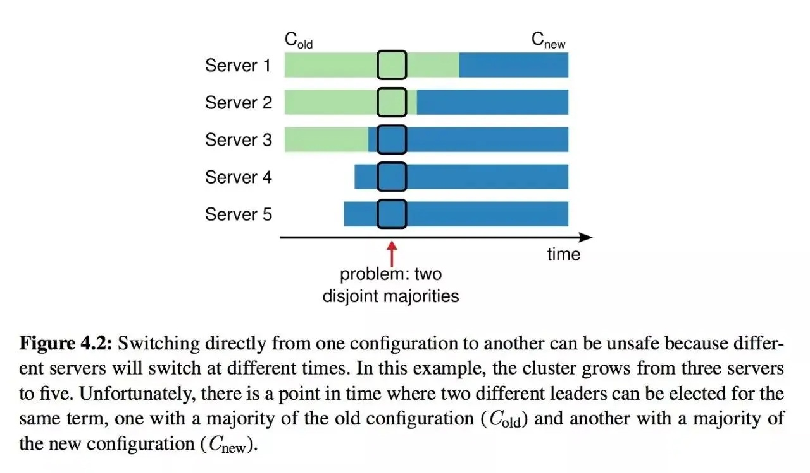
这张图很好的说明了问题的关键，即在红色箭头所示的时间点，出现了两个多数派：
- Server1、2组成的，以CO为拓扑关系的多数派，此时Server1和Server2可以根据CO的配置选择出来一个leader。
- Server3、4、5组成的，以CN为拓扑关系的多数派，此时Server3、4、5可以根据CN的配置选择出来一个leader。
每次只允许增加或移除一个节点
具体步骤：
- 由于每次增减一个节点方式无论如何CO和CN都会相交，所以RAFT采用了直接提交一个特殊的replicated LogEntry的方式来进行集群关系变更。
- 跟普通的LogEntry提交的不同点，该LogEntry不需要commit就生效，只需要append到log中即可。(“The New configuration takes effect on each server as soon as it is added to the server’s log”)。
- 后一轮MemberShip Change的开始必须在前一轮MemberShip Change Commit之后进行，以避免出现多个leader的问题。
这个解决方案是最常用的，实现简单。解决方案的核心为增删一个节点的时候，新旧配置中的大多数必定有部分重叠：
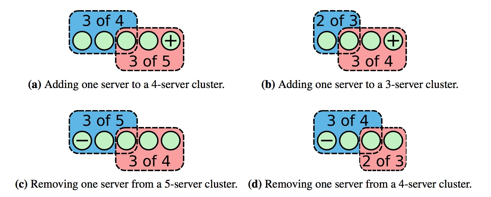

我们以三个节点变化到四个节点为例。
- 图(a)中，三个节点分别是S1、S2和S3，此时S1为主。
- 图(b)中，新增节点S4，S4由于是新节点，所以S4是知道集群拓扑全貌的。作为leader的S1收到请求，准备开始推送，此时按照上述规则，S1的该条config log还未被commit，但是也已经知道集群拓扑全貌了。
- 图(c)中，S1宕机，此时S4仍然以S1、S2、S3和S4作为集群拓扑全貌，但是S2和S3依然是旧配置。此时，S2、S3和S4都可能成为leader。其中S2和S3由于不知道S4的存在，S2只要收到自己和S3的投票，就会成为leader。S4主动发起投票的情况下，会收到S2、S3和自己的投票，所以也可能成为主。
- 图(d)中，此时假定S2成为主，S1恢复，此时S2不知道S4的存在，所以不会给他发送心跳，此时S4被孤立。并且此时，这次membership变更会被认为失败，因为只有当大多数commit了config log，leader才会响应客户端，而当前的场景中，append S4这条config log最终会被S2上的日志给删除掉，此时集群恢复图(a)的旧配置的情况（仅仅相当于leader变成了S2）。
- 假定图(b)中，S1没有宕机，并且把消息赋值给了S2，此时就满足了集群中大多数已经收到消息，可以commit并且返回给client表示此次membership变更成功。但是提交之后S1宕机，来到图(e)。
- 图(e)中，S3不会成为leader，因为S2和S4有比S2更新的日志（append S4这条config log也是一条log，但是S3没有这条log，所以S3的index一定小于S2和S4），此时leader只可能在S2和S4中选出。
- 假定S4选举成为新leader，来到图(f)。后面S4会把append S4这条config log复制给S3，此时所有集群的拓扑关系均为最新的配置。
这里引入另外一个问题，即图(d)中，S4被孤立，此时S2还不知道S4的存在，当然也不会给S4发送心跳，此时S4会超时并且成为candidate开始发起新一轮投票，此时如何处理这种情况？这个我们后面会继续讨论。先看可能出现的问题。
为什么后一轮membership change必须在前一轮membership change完成之后（完成即commit之后）进行：
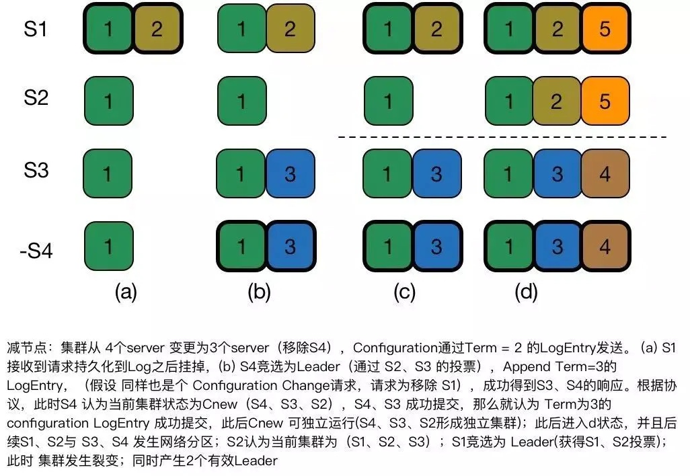
这个图很好的说明了这个问题，如果这样操作此时可能出现多主问题。
为什么Single MemberShip Change LogEntry只需要append持久化到log（而不需要 commit）就可以应用：
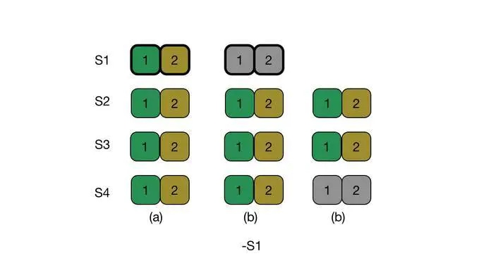
如图所示：leader S1接收到集群变更请求将集群状态从[S1、S2、S3、S4]变更为[S2、S3、S4]，提交到所有节点之后commit之后，返回客户端集群状态变更完成（如图a），S1退出（如图b）；S1 退出之后，S1、S2、S3由于没有接收到leader S1的心跳，导致进行选举，但是不幸的是S4故障退出。假设这个时候S2、S3由于Single MemberShip Change LogEntry没有commit还是以[S1、S2、S3、S4]作为集群状态，那么集群没法继续工作。但是实质上在图（b）中S1返回客户端集群状态变更请求完成之后，实质上是认为可独立进入正常状态。
join consensus
这是一种类似两阶段提交的思想：
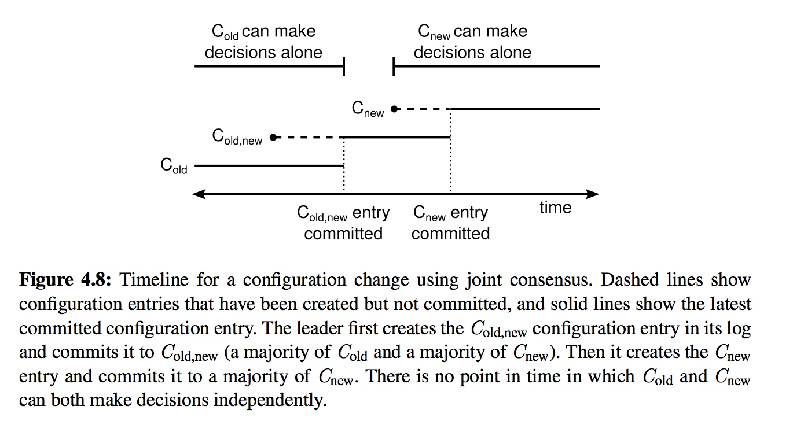
这种实现比较复杂，我们需要保证我们的CO并CN被提交到了CO中的大部分和CN中的大部分。温习一下脑裂现象并阐述一下join consensus如何解决这个问题。这里假定我们的新旧配置如下图所示：
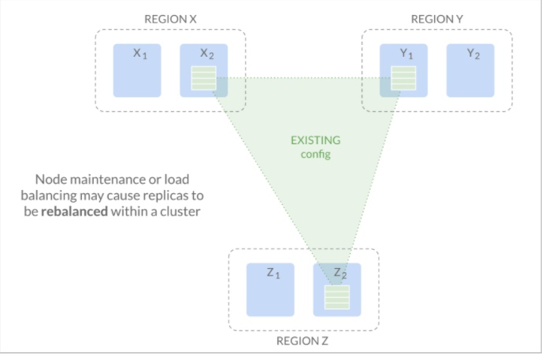
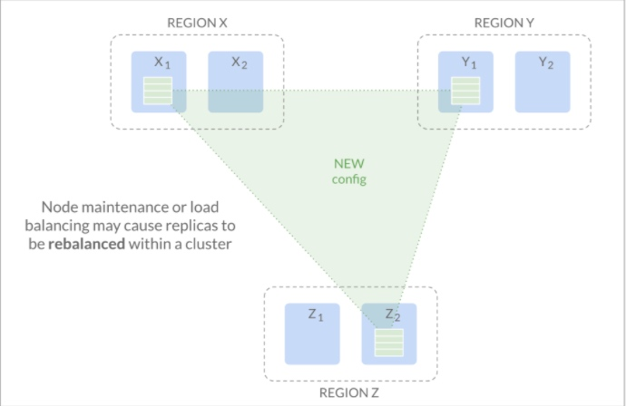
注意这个场景中，我们就配置是X2、Y1和Z2，而新配置是X1、Y1和Z2，与我们之前提到的单纯的新增节点不同，我们这里的场景是变更节点（X2替换为X1）。
看看为什么会产生脑裂现象，第一张图为初始状态，C1表示旧配置[X2, Y1, Z2]，C2表示新配置[X1, Y1, Z2]：
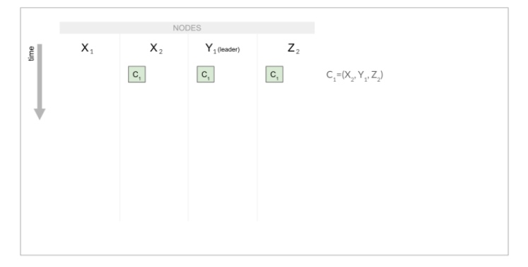
推送C2到leader：
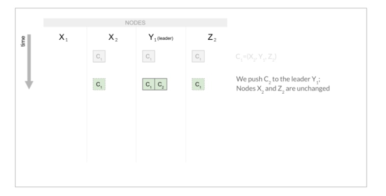
Y1立刻切换到了C2配置，此时认为集群中存在[X1, Y1, Z2]，Y1将这条日志推送给X1，所以X1也更新配置为最新（图中的C1和C2表示两条配置变更日志）：
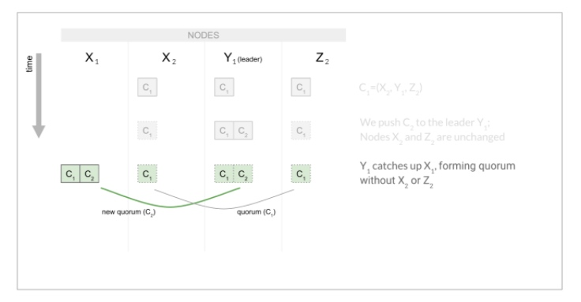
此时就形成了两个多数派，分别是X1、Y1组成的新配置下的多数派和X2、Z2组成的旧配置下的多数派，此时两个多数派可以同时开始工作（图中的x表示X1和Y1组成的多数派收到了一条log，而y表示X2和Z2组成的多数派收到了另外一条log）：
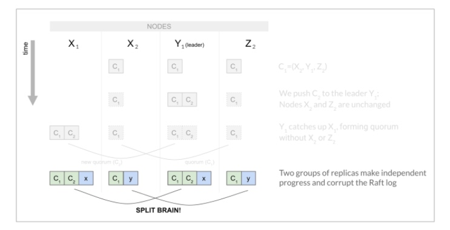
如何解决这个问题，上面也已经说过了，我们需要先推送CO并CN的配置（CO=C1，CN=C2）到新集群中的多数派和旧集群的多数派，而CO并CN的配置如下所示：
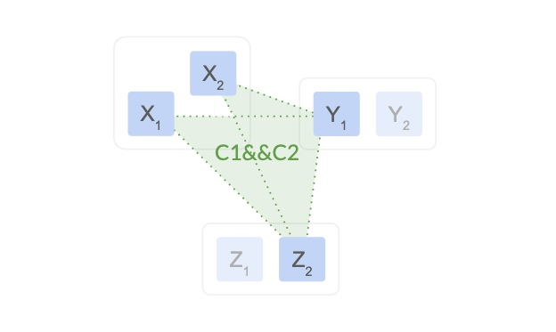
拥有CO并CN的机器做任何决定，需要CO和CN下的大多数都同意才可以，比如提交。按照这个规定，Y1和X1就不能成为大多数，当然就不能commit log。
我们继续推演下去：
此时如果产生了分区，即Y1和X1单独一个分区，X2和Z2单独一个分区（这样分区导致CO并CN永远无法推送到X2和Y2上面，对于客户端来说，这次membership变更会被认为失败，需要再次进行成员变更）。此时X2和Z2的分区可以独立做决定（比如选主和commit log）。而X1和Y1形成的分区，再假定两种情况：
- 如果Y1这个leader宕机，重新启动后，由于持有CO并CN这个配置，所以Y1和X1都无法通过竞选成为leader（无法得到CO的大多数同意）。而X2和Z2可以，此时X2和Z2由于进行了一次竞选，所以term一定大于Y1的term，当网络恢复的时候，Y1会自动成为follower。
- 如果Y1这个leader不宕机，也没什么问题，因为Y1虽然是leader，但是不能commit log。同样的，当网络恢复后，由于X2和Z2成为leader后的term一定大于Y1，所以Y1和新的X1在网络恢复后都会成为follower。
而一旦CO并CN的配置被推送到了CO的大多数和CN的大多数的时候，就可以给客户端返回membership变更成功了，此时不管怎么分区，我们都可以保证整个集群正常运行，具体的逻辑这里不再进行推演。
新节点如何追赶
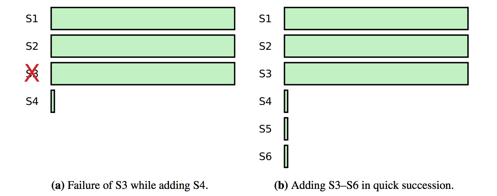
这两张图展示了为什么追赶会引发可用性问题。
- 图(a)中，新增S4已经成功，但是S3宕机。此时任何一条消息需要大多数（3个）节点收到消息才可以commit，由于S4的日志是空的，追赶需要很长时间，此时整个集群出在不可用状态，因为所有的新日志的commit都会等待非常久。
- 图(b)中，新增S4-S6三个节点，同样的，由于一条消息需要大多数（4个）节点收到消息才可以commit，由于达到大多数一定包含S4-S6中的一台，所以会出现与图(a)一样的问题。
解决问题的方式这里以ETCD为例，ETCD引入了learner角色，新加入的节点设置为learner状态，该状态的节点不计在majority，也就不参与投票和commit，当learner追上集群的进度时，提升为正常的节点，完成config change。
RAFT论文中也提到了多轮复制的方案：
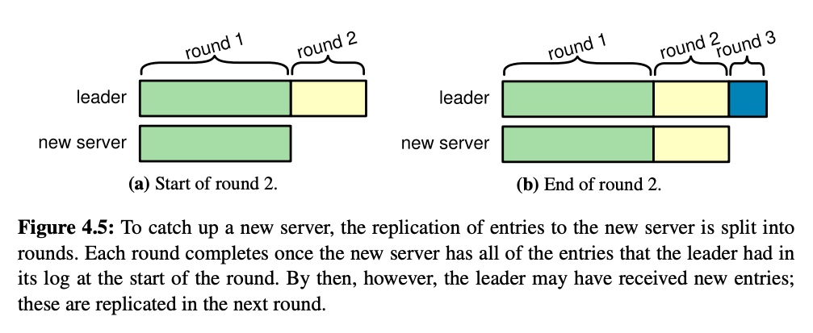
这里不具体展开，可以阅读论文获取更多细节。
删除的节点是当前leader
有可能需要移除的节点是leader，按照RAFT论文的做法会比较奇怪，leader需要管理不包含自己的集群，直到提交之后再退出。论文中提到可以通过leadership transfer将leadership转移到其他节点，然后再移除原先的leader。leadership transfer还有其他的用途，比如leader所在机器的负载比较高，要转移到低负载机器上；leader要改变机房实现就近等，同时还能降低选举的影响。
leadership transfer的流程：
- leader 停止接收新的请求。
- 通过log replication使leader和transferee的log相同，确保transferee能够赢得选举。
- leader发送消息给transferee，让transferee立即发起选举。leader收到transferee的消息会退出。
仍有几个问题需要处理：
- transferee挂了: 当
leadership transfer在election timeout时间内未完成，则终止并恢复接收客户端请求。 - transferee有大概率成为下一个leader，若失败，再次发起leader transfer即可。
- check quorum会使节点忽略RequestVote，需要强制投票。
为什么要有PRE-VOTE
假定此时节点S1、S2和S3，S2是leader，S1被隔绝。此时S1由于收不到心跳，会不断成为candidate，增加term并且发起投票。虽然不能成为主（网络隔绝，只能收到自己的一票），但是加入term增大到一定程度的时候（比S2更大），网络恢复，那么S1就会赢得选举。
PRE-VOTE：
partitioned节点的log一般会落后于其他节点，不会收到majority的投票，基于此，增加了PRE-VOTE阶段：
- 只有收到majority的投票，才会增加term进行正常的选举过程。
- 若PRE-VOTE失败，当网络恢复后，该节点收到leader的消息重新成为follower，避免了disrupt集群。
PRE-VOTE只解决了log落后的节点不会自增term 导致集群disrupt，但是仍有可能节点log没有落后但仍发起PRE-VOTE。下一个小节会继续讨论。
被移除的节点破坏当前集群的选举
当我们移除S1的时候，S4是当前新集群的leader，此时S4会断开与S1的心跳（已经创建了CN配置），此时S1、S2和S3还没有收到新的配置，此时会导致S1自增版本号开始进行选举（可以收到S1、S2和S3的选票）。
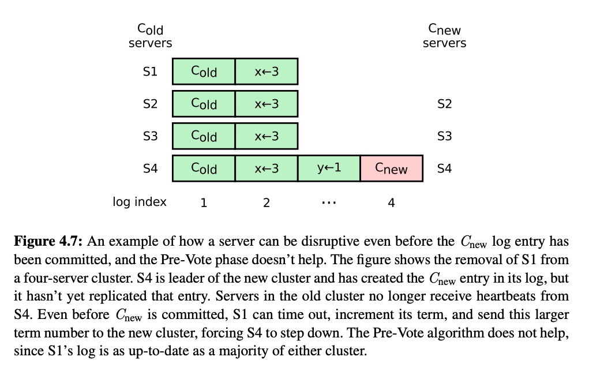
PRE-VOTE也并不能解决上述问题，同样的还有下面这个场景：
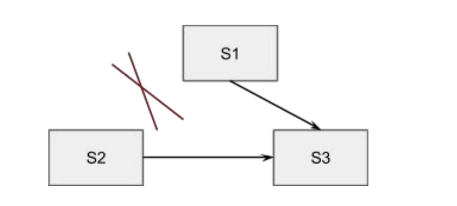
- 有S1、S2、S3三个节点，S1为leader且三个节点log相同。
- 发生网络分区，其中S1和S3互通，S2和S3互通，S1和S2不通。
- S2发起PRE-VOTE，收到S3投票后，进行正常election，成为新的leader。
解决方式是通过Leader lease。核心思想是：节点不应该在集群正常工作的情况下给其他节点投票。
当节点在最小election timeout时间内接收到了leader的消息，就不会改变自己的term，也不会给其他节点投票。（“if a server receives a RequestVote request within the minimum election timeout of hearing from a current leader, it does not update its term or grant its vote.”）
论文中也提到了，这个改变与leadership transfer存在冲突，因为leadership transfer的第三步是：
leader发送消息给transferee，让transferee立即发起选举。leader收到transferee的消息会退出。，需要注意的是，此时leader仍然存在，如果leader lease机制存在，会导致transferee发出的投票被其他follower拒绝掉，此时我们需要增加一个标志位，表示这次发起的投票可以强制移除leader。
leader lease是从follower视角确保leader是合法的。
这里又出现了一个新的问题，leader如何确保自己合法？这需要另外一个机制，即check quorum机制。看看如果只有leader lease会出现什么问题：

- 图(a)其中共五个节点，S1位leader，S1与S2通，S2、S3和S3互相通，S5被隔离，此时S1是leader。
- 图(b)中，由于S3和S4都收不到leader的心跳，两者会成为candidate并且开始投票，假定此时S4成为candidate。它只能收到自己喝S3的投票，因为S2与S1互通，一直有来自leader的消息，所以触发leader lease机制，S2会认为现在leader是正常的而拒绝掉S4的投票。此时S3和S4永远无法达到大多数，导致这两个节点认为整个集群是不可用的。
这个情况并不合理，S2、S3和S4都是互通的，其实我们的集群中是有一个大多数的，并且我们认为其实是可以进行服务的，只要leader在S2、S3和S4之间选出来就可以了。这里我们引入一个新的机制，即CHECK-QUORUM。
leader每隔election timeout检查其他节点的活跃情况，若少于majority活跃，则自动step down为 follower。
即leader隔一段时间就去检查自己是不是属于大多数中，如果不是，就自动退出成为follower。在我们上面的图中，由于S1只与S2相连，不满足集群中的大多数，所以S1自动退化成为follower。然后当进行到图(b)中时，S4成为candidate，就可以收到S2（S1已经退化成follower了，leader lease对于S2不再生效）、S3和自己的投票成为leader，整个集群又可以正确的工作了。
写在后面
RAFT的论文被熟知的是这一篇，但是RAFT的作者的博士毕业论文对RAFT做了更详细的阐述。要在分布式场景下达到强一致性是非常困难的，即使是相对容易理解的RAFT依然有一定的门槛。
本文更多的笔墨都花在成员变更这个模块，这个模块也许是RAFT中最复杂的模块，后面还有关于快照和日志压缩的相关部分，这里就不再阐述了。